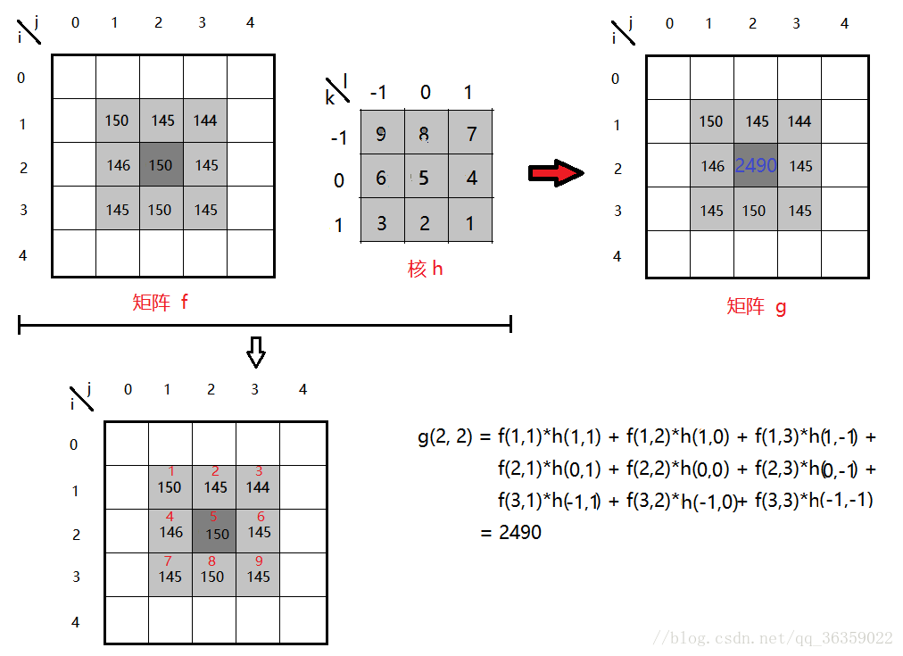
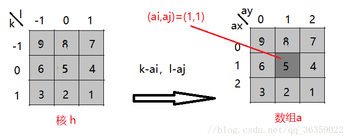
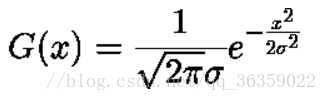
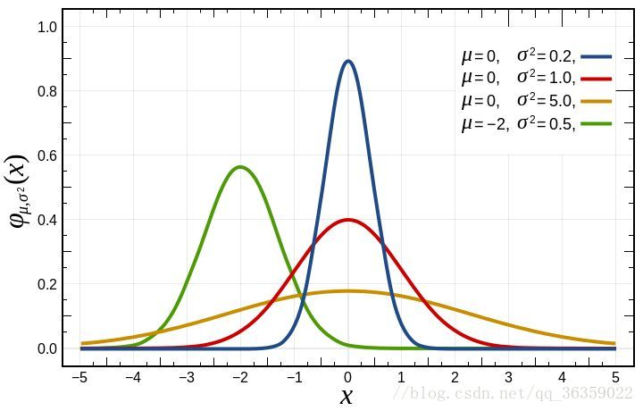
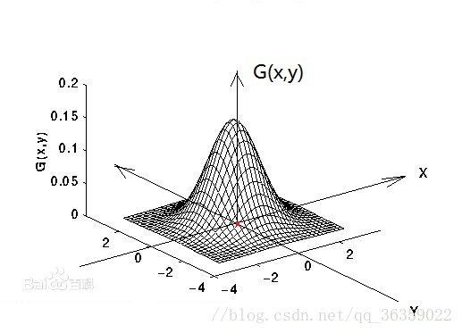
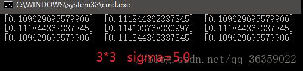
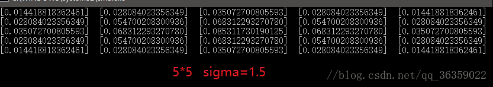
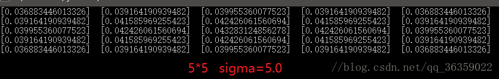
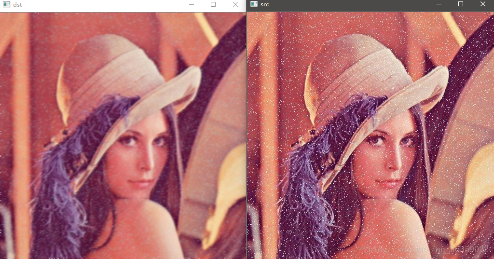
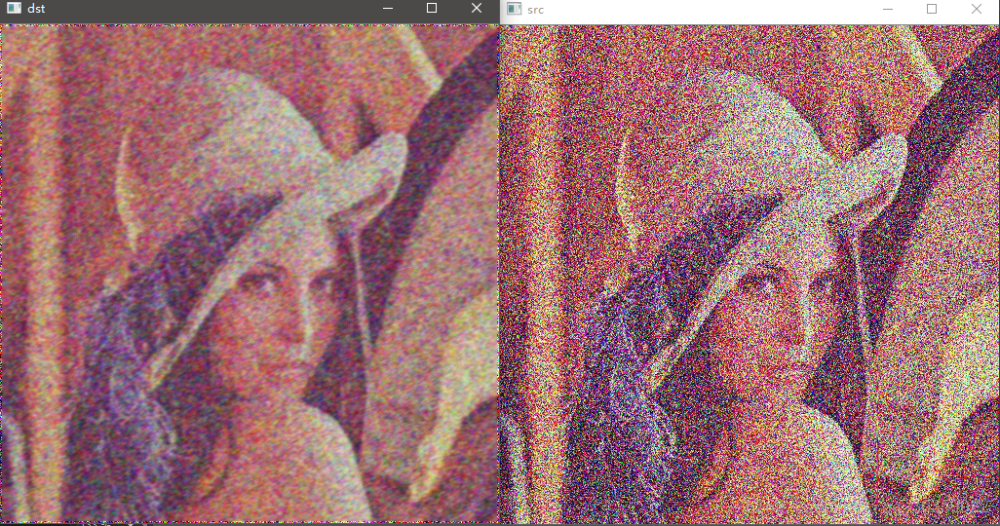

Opencv in Pycharm（2）
图像处理
平滑操作
平滑平滑，取平均。我们使用卷积核来处理图像像素点。
针对上面这个噪点图形，我们应用平均卷积操作。我们对噪点抹除，就是通过对周围像素点取平均。我们首先构造一个3$\times$3的矩阵对目标像素点为中心的内核求取内积。（不同于经典矩阵相乘，我们是一一对应的，平凡算法复杂度为$O(N^k)(k \in N^+)$的相乘）随后把结果填充到像素点的中心。
下面我们对这个图操作一下：
img_path = "img/lenaNoise.png"
img = cv2.imread(img_path)
cv2.imshow("Noise Version",img)
blur33=cv2.blur(img,(3,3))
cv2.imshow("3 times 3",blur33)
blur55=cv2.blur(img,(5,5))
cv2.imshow("3 times 3",blur55)
cv2.waitKey(0) 产生的效果是令人满意的：
3$\times$3：

5$\times$5：

可以看到核越大，越是噪点不明显，但是图像也就越模糊。
还有一个类似的：是BoxFilter函数：（方框滤波）
在OpenCV中，实现方框滤波的函数是cv2.boxFilter（），其语法格式为：
dst=cv2.boxFilter（src,ddepth,ksize,anchor,normalize,borderType）
# 但是一般的。。。。。。
dst=cv2.boxFilter（src,ddepth,ksize）● dst是返回值，表示进行方框滤波后得到的处理结果。
● src 是需要处理的图像，即原始图像。它能够有任意数量的通道，并能对各个通道独立处理。图像深度应该是CV_8U、CV_16U、CV_16S、CV_32F 或者 CV_64F中的一种。
● ddepth是处理结果图像的图像深度，一般使用-1表示与原始图像使用相同的图像深度。
● ksize 是滤波核的大小。滤波核大小是指在滤波处理过程中所选择的邻域图像的高 度和宽度。
● anchor 是锚点，其默认值是（-1,-1），表示当前计算均值的点位于核的中心点位 置。该值使用默认值即可，在特殊情况下可以指定不同的点作为锚点。
● normalize 表示在滤波时是否进行归一化（这里指将计算结果规范化为当前像素值范围内的值）处理，该参数是一个逻辑值，可能为真（值为1）或假（值为0）：
1.当参数normalize=1时，表示要进行归一化处理，要用邻域像素值的和除以面积。此时方框滤波与均值滤波效果相同。
2.当参数normalize=0时，表示不需要进行归一化处理，直接使用邻域像素值的和。当 normalize=0时，因为不进行归一化处理，因此滤波得到的值很可能超过当前像素值范围的最大值，从而被截断为最大值。这样，就会得到一幅纯白色的图像。
● borderType是边界样式，该值决定了以何种方式处理边界。
通常情况下，在使用方框滤波函数时，对于参数anchor、normalize和borderType，直接采用其默认值即可。因此，函数cv2.boxFilter（）的常用形式为：
可以等效成blur，就是选择更多了而已。如果不进行归一化，就是停在255，所以图像会很白。
Filt1 = cv2.boxFilter(img,-1,(3,3),normalize=True)
Filt2 = cv2.boxFilter(img,-1,(3,3),normalize=False)
cv2.imshow("Filt1",Filt1);
cv2.imshow("Filt2",Filt2);
cv2.imwrite("Filt1.png",Filt1)
cv2.imwrite("Filt2.png",Filt2)
cv2.waitKey(0)Filt1： 归一化
Filt2: 摆烂
高斯滤波
这个改进了平均算法，就是利用空间距离远近来作为计算权重：近的权重大，反之权重小。
Gaussain=cv2.GaussianBlur(img,(5,5),1)
cv2.imshow("Gaussain",Gaussain)
cv2.imwrite("Gaussain.png",Gaussain)关于高斯滤波及其算法的扩展
材料来源：(46条消息) opencv———-高斯滤波_opencv高斯滤波_LYSSLQ2015的博客-CSDN博客！
高斯滤波(Gauss Filter)是线性滤波中的一种。在OpenCV图像滤波处理中，高斯滤波用于平滑图像，或者说是图像模糊处理，因此高斯滤波是低通的。其广泛的应用在图像处理的减噪过程中，尤其是被高斯噪声所污染的图像上。高斯滤波的基本思想是: 图像上的每一个像素点的值，都由其本身和邻域内其他像素点的值经过加权平均后得到。其具体操作是，用一个核(又称为卷积核、掩模、矩阵)扫描图像中每一个像素点，将邻域内各个像素值与对应位置的权值相称并求和。从数学的角度来看，高斯滤波的过程是图像与高斯正态分布做卷积操作。
注意: 高斯滤波是将二维高斯正态分布放在图像矩阵上做卷积运算。考虑的是邻域内像素值的空间距离关系，因此对彩色图像处理时应分通道进行操作，也就是说操作的图像原矩阵时用单通道数据，最后合并为彩色图像。
一、几个概念
什么是低通滤波、平滑图像、图像模糊处理？
平滑图像与图像模糊处理是相同的含义。平滑处理即是通过操作后，使得图像的像素值与邻域内其他像素值的的变化程度减小。在一张图像上，边缘的像素值是变化程度最剧烈的地方，而其他相对平缓。因此，平滑图像最直观的表现是图像的上物体的边缘轮廓变得模糊。低通滤波是指仅允许低频率信号通过。一张图像上的大部分能量聚集在低频和中频上，而高频大多是图像中物体的边缘部分，也有可能是高频噪声点。在单通道中，各像素点的取值都在(0~255)中，因此，低通滤波通过一定的阙值设置，有去除高频信号和平缓边缘的效果。什么是核(又称为卷积核、掩模、矩阵)？
核的本质其实就是一个大小固定、由数值参数组成的数学矩阵，例如一个33的核就是一个33的矩阵,而矩阵中的数据则为权值。什么是卷积运算？
卷积运算是指输入图像中某一像素点的邻域的各个值（包括该点）与卷积算子中的值做矩阵相乘运算，最后得到输出值。
卷积算子的公式:
g(i，j) 代表原图像矩阵上的(i，j)点的值，它是输出值。
f(i-k，j-l) 代表原图像矩阵上(i，j)点的邻域中的对应点的值。
h(k,，l) 代表与f(i-k ， j-l)这个值在核对应位置的点的值
请看下图：这里用的是f(i-k,j-l)h(k,l)

由上图我们看到，矩阵f是将要进行操作的图像矩阵，当前的(i，j)是(2，2)点。h为核，其以中心(0，0)为参考点。因此f矩阵对应范围即为f(2，2)的邻域。矩阵g为图像输出矩阵，g(2，2)的值为输出值。
注意：卷积算子和相关算子在核上是180度翻转的矩阵，请不要搞混
4.核(卷积核、掩模、矩阵等)
在3的卷积运算中，用到的公式是：
g(i, j) = ∑ f(i-k, j-l)h(k, l) 。其中 k，l代表核上的坐标。而核的坐标明显与数组下标不一致。因此，我们需要做一个转换以满足用数组下标来访问该核的数据。
假设有33数组a，它与核的对应关系为
a(0, 0) ===> h(-1, -1) a(0, 1) ===> h(-1, 0) a(0, 2) ===> h(-1, 1)
a(1, 0) ===> h(0, -1) a(1, 1) ===> h(0, 0) a(1, 2) ===> h(0, 1)
a(2, 0) ===> h(1, -1) a(2, 1) ===> h(1, 0) a(2, 2) ===> h(1, 1)
对于33数组，其下标是0开始的，假设该数组的参考点(ai, aj)为中心,则有
g(i, j) = ∑ f(i-(k-ai), j-(l-aj))h(k, l)
带入数组参考点(1, 1)，则有
g(i, j) = ∑ f(i-(k-1), j-(l-1))h(k, l)
此时，k，l可以从0开始取值

5.图像通道分离与合并(cv::Mat)
// src 原图像，多通道
// [1] 彩色图片通道分离
std::vector<cv::Mat> channels;
cv::split(&src, channels);
// [3] 滤波
// OpenCV中操作
// channels[0] ==> B通道
// channels[1] ==> G通道
// channels[2] ==> R通道
// 省略对各个通道的处理
// [4] 合并返回
cv::merge(channels, *dst);二、高斯函数
高斯滤波，顾名思义，这是一个建立在高斯正态分布基础上的滤波器。首先我们来了解高斯函数。(图片来源于网络)
一维高斯函数：
可以看到，G(x)的跟sigma的取值有极大的关系。sigma取值越大，图像越平缓，sigma取值越小，图像越尖锐。


二维高斯函数：
二维高斯是构建高斯滤波器的基础。可以看到，G(x,y)在x轴y轴上的分布是一个突起的帽子的形状。这里的sigma可以看作两个值，一个是x轴上的分量sigmaX，另一个是y轴上的分量sigmaY。对图像处理可以直接使用sigma并对图像的行列操作，也可以用sigmaX对图像的行操作，再用sigmaY对图像的列操作。它们是等价的。
当sigmaX和sigmaY取值越大，整个形状趋近于扁平；当sigmaX和sigmaY取值越小，整个形状越突起。

高斯滤波原理就是将上图的二维正态分布应用在二维的矩阵上，G(x,y)的值就是矩阵上的权值，将得到的权值进行归一化，将权值的范围约束在[0,1]之间，并且所有的值的总和为1。
假设一个3*3的核，sigma取值1.5以及sigma取5.0，归一化后其权值分布分别是：

假设一个5*5的核，sigma取值1.5以及sigma取5.0，经归一化后其权值分布分别是：


可以看到，权值的分布是以中间高四周低来分布的。并且距离中心越远，其对中心点的影响就越小，权值也就越小。
因此可以总结：
（1）在核大小固定的情况下，sigma值越大，权值分布越平缓。因此，邻域各个点的值对输出值的影响越大，最终结果造成图像越模糊。
（2）在核大小固定的情况下，sigma值越小，权值分布越突起。因此，邻域各个点的值对输出值的影响越小，图像变化也越小。假如中心点权值为1，其他点权值为0，那么最终结果是图像没有任何变化。
（3）sigma固定时，核越大图像越模糊。
（4）sigma固定时，核越小图像变化越小。
三、高斯滤波器实现
首先看效果：
对于椒盐图作处理

对于高斯噪声图作处理

（1）main函数：读取图片 ==> 高斯滤波 ==> 结果显示
int main()
{
// [1] src读入图片
cv::Mat src = cv::imread("Median_pic.jpg");
// [2] dst目标图片
cv::Mat dst;
// [3] 高斯滤波 sigma越大越平越模糊
myGaussianFilter(&src, &dst, 5, 1.5f);
// [4] 窗体显示
cv::imshow("src", src);
cv::imshow("dst", dst);
cv::waitKey(0);
cv::destroyAllWindows();
return 0;
}（2）彩色图像通道分离处理，每个通道都进行高斯滤波，最后合并
void myGaussianFilter(cv::Mat *src, cv::Mat *dst, int n, double sigma)
{
// [1] 初始化
*dst = (*src).clone();
// [2] 彩色图片通道分离
std::vector<cv::Mat> channels;
cv::split(*src, channels);
// [3] 滤波
// [3-1] 确定高斯正态矩阵
double **array = getGaussianArray(n, sigma);
// [3-2] 高斯滤波处理
for (int i = 0; i < 3; i++) {
gaussian(&channels[i], array, n);
}
// [4] 合并返回
cv::merge(channels, *dst);
return ;
}（3）生成高斯正态分布核(卷积核，掩模等)
/* 获取高斯分布数组 (核大小， sigma值) */
double **getGaussianArray(int arr_size, double sigma)
{
int i, j;
// [1] 初始化权值数组
double **array = new double*[arr_size];
for (i = 0; i < arr_size; i++) {
array[i] = new double[arr_size];
}
// [2] 高斯分布计算
int center_i, center_j;
center_i = center_j = arr_size / 2;
double pi = 3.141592653589793;
double sum = 0.0f;
// [2-1] 高斯函数
for (i = 0; i < arr_size; i++ ) {
for (j = 0; j < arr_size; j++) {
array[i][j] =
//后面进行归一化，这部分可以不用
//0.5f *pi*(sigma*sigma) *
exp( -(1.0f)* ( ((i-center_i)*(i-center_i)+(j-center_j)*(j-center_j))/ (2.0f*sigma*sigma) )); sum += array[i][j];
}
}
// [2-2] 归一化求权值
for (i = 0; i < arr_size; i++) {
for (j = 0; j < arr_size; j++) {
array[i][j] /= sum;
printf(" [%.15f] ", array[i][j]);
}
printf("\n");
}
return array;
}（4）进行高斯滤波操作
/* 高斯滤波 (待处理单通道图片, 高斯分布数组， 高斯数组大小(核大小) ) */
void gaussian(cv::Mat *_src, double **_array, int _size)
{
cv::Mat temp = (*_src).clone();
// [1] 扫描
for (int i = 0; i < (*_src).rows; i++) {
for (int j = 0; j < (*_src).cols; j++) {
// [2] 忽略边缘
if (i > (_size / 2) - 1 && j > (_size / 2) - 1 &&
i < (*_src).rows - (_size / 2) && j < (*_src).cols - (_size / 2)) {
// [3] 找到图像输入点f(i,j),以输入点为中心与核中心对齐
// 核心为中心参考点 卷积算子=>高斯矩阵180度转向计算
// x y 代表卷积核的权值坐标 i j 代表图像输入点坐标
// 卷积算子 (f*g)(i,j) = f(i-k,j-l)g(k,l) f代表图像输入 g代表核
// 带入核参考点 (f*g)(i,j) = f(i-(k-ai), j-(l-aj))g(k,l) ai,aj 核参考点
// 加权求和 注意：核的坐标以左上0,0起点
double sum = 0.0;
for (int k = 0; k < _size; k++) {
for (int l = 0; l < _size; l++) {
sum += (*_src).ptr<uchar>(i-k+(_size/2))[j-l+(_size/2)] * _array[k][l];
}
}
// 放入中间结果,计算所得的值与没有计算的值不能混用
temp.ptr<uchar>(i)[j] = sum;
}
}
}
// 放入原图
（*_src） = temp.clone();
}中值滤波
什么是中值？就是排序取中间的中位数。那就直接把目标像素点直接换成中位数跑路！
median=cv2.medianBlur(img,5)
cv2.imshow("median",median)
cv2.imwrite("median.png",median) 
可以看到效果很好。令人满意。
扩展阅读
一、概述
使用中值滤波器模糊图像。
该函数使用具有 ksize×ksize 孔径的中值滤波器对图像进行平滑处理。 多通道图像的每个通道都是独立处理的。
中值滤波器在内部使用 BORDER_REPLICATE 来处理边界像素，请参阅 BorderTypes。
下图描述了一个ksize=3×3的滑动窗口（或称滤波器模板、kernel），如黄色部分所示。用这个ksize=3×3的窗口作用于原始图像上的每一个像素，如下图的绿色部分所示，被这个窗口覆盖的9个像素点都参与计算，这样在该像素点上就会得到一个新的像素值，当窗口沿着图像逐个像素进行计算，就会得到一幅新的图像。

上图中滤波器模板的不同就构成了滤波算法的差异，比如均值平滑算法中滑动窗口中各个像素点的系数均为1/(窗口高*窗口宽)，高斯平滑中系数和中心点的距离满足高斯分布。
中值平滑和均值平滑一样也用到了滑动窗口，但是它并不是计算滑动窗口中的某种加权和，而是使用原图像滑动窗口中所有像素值排序后的中值作为新图像的像素值。
从上图也可以看到，当滑动窗口作用于图像边沿的时候，滑动窗口的某些像素并没有和图像重合，这时就需要对边沿做特殊处理，常用的方法有填0、填1、复制边沿等方式。
二、medianBlur函数
1、函数原型
cv::medianBlur (InputArray src, OutputArray dst, int ksize)
2、参数详解
src ：输入 1、3 或 4 通道图像； ksize 为 3 或 5 时，图像深度应为 CV_8U、CV_16U 或 CV_32F，对于较大的光圈尺寸，只能为 CV_8U。
dst ：与 src 大小和类型相同的目标数组。
ksize ：孔径线性尺寸； 它必须是奇数且大于 1，例如：3、5、7 …
三、OpenCV源码
1、源码路径
opencv\modules\imgproc\src\median_blur.dispatch.cpp2、源码代码
void medianBlur( InputArray _src0, OutputArray _dst, int ksize )
{
CV_INSTRUMENT_REGION();
CV_Assert(!_src0.empty());
CV_Assert( (ksize % 2 == 1) && (_src0.dims() <= 2 ));
if( ksize <= 1 || _src0.empty() )
{
_src0.copyTo(_dst);
return;
}
CV_OCL_RUN(
_dst.isUMat(),
ocl_medianFilter(_src0,_dst, ksize)
)
Mat src0 = _src0.getMat();
_dst.create( src0.size(), src0.type() );
Mat dst = _dst.getMat();
CALL_HAL(
medianBlur,
cv_hal_medianBlur,
src0.data,
src0.step,
dst.data,
dst.step,
src0.cols,
src0.rows,
src0.depth(),
src0.channels(), ksize
);
CV_OVX_RUN(true,
openvx_medianFilter(_src0, _dst, ksize))
//CV_IPP_RUN_FAST(ipp_medianFilter(src0, dst, ksize));
CV_CPU_DISPATCH(
medianBlur,
(src0, dst, ksize),
CV_CPU_DISPATCH_MODES_ALL
);
}四、效果图像示例
原图：


版权声明：本才来哦为CSDN博主「坐望云起」的原创文章，遵循CC 4.0 BY-SA版权协议，转载请附上原文出处链接及本声明。
原文链接：https://blog.csdn.net/bashendixie5/article/details/125255049
图像拼接
现在我们使用Numpy的hstack方法拼接一下图片：
res=np.hstack((blur33,Gaussain,median))
cv2.imshow("Compare!",res)
cv2.imwrite("Compare.png",res) 起到对比效果（显然不是那么好。。。）